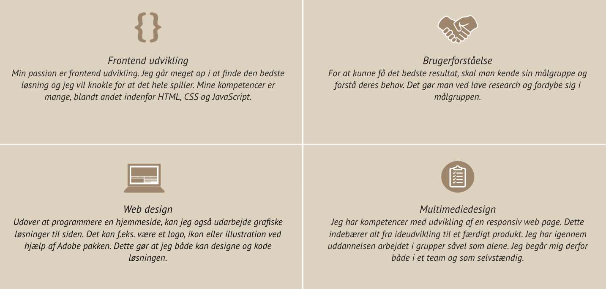

Clara Juul Birk.
Studerer Frontend-udvikling på 3. semester.
.
Jeg er 22 år og bosat i Århus C. Jeg vil beskrive mig selv som arbejdsom, energisk og imødekommende, samt er et godt førstehåndsindtryk vigtigt for mig. Min store passion er frontend udvikling og programmering, og netop derfor er jeg rigtig glad for min uddannelse og fordyber mig i de projekter som vi tildeles. Gennem uddannelsen har jeg arbejdet og brugt tid på HTML, JavaScript, CSS, m.m.
Mine kompentcer
Mine projekter
I dette projekt lavede jeg en mobil og laptop venlig version af en virksomhed, der sælger cykelferier. Dette gjorde jeg ved hjælp af HTML, CSS og JavaScript.
Webudvikler
Det er noget af det, jeg syntes er mest spændende ved webudvikling. Jeg elsker at lære og udvide min læringshorisont, så jeg skaber iøjnefaldende hjemmesider og internetløsninger.
Content Creator
Som content creator skal man holde tungen lige i munden, for at få det hele til at se godt ud.
Jeg er kreativ og jeg elsker at fordybe mig i det, jeg bliver sat til. Jeg har viden indenfor Adobe Pakken og jeg udvider hele tiden mine kompentencer i denne.
SEO-Ansvarlig
Vi bestræber os på at have de bedste hjemmesider og dette sker blandt andet ved hjælp af søgemaskine optimering.
Derfor er det vigtig for os at korrekt implementere det på vores hjemmesider.
Markedet for SEO ændre sig altid, så derfor skal du være god til at tænke i nye baner.
Om mig
Hej! Jeg hedder Clara.
Jeg er 22 år gammel og jeg bor i Århus. Til daglig læser jeg
multimediedesign på Erhvervsakademi i Århus. Dette er jeg rigtig glad for og jeg elsker at bruge min
skoletid og fritid på at kode nye projekter.
Jeg har også arbejdet meget med Adobe pakken, den synes jeg er spændende at lede rundt i og hele tiden udvide min horisont.
Som person er jeg udadvendt og smilende - jeg elsker at bruge min tid sammen med dem jeg holder af - og jeg
kan godt lide at møde nye mennesker.
Hvis det lyder som noget for din virksomhed, så tøv ikke med at kontakte mig!
Mine fritidsinteresser
Sport og løb
Jeg holder rigtig meget af at være aktiv. Jeg elsker at gå i fitness, tage ud og løbe, spille fodbold eller badminton. Dette er noget jeg har gjort hele livet. Det er her jeg kan slappe af og få sluppet løs efter en lang dag.
Lave mad
Jeg elsker at lave mad og jeg går meget op i madlavning. Jeg eksperimenterer med meget forskelligt mad og retter, så jeg kan prøve noget anderledes mad. Jeg elsker at se MasterChef og følge med i diverse andre madlavningsprogrammer.
Ide udvikling
Jeg sidder tit og fordyber mig i mine projekter. I min fritid kan jeg godt lide at lave videre på projekterne fra skolen, men også til diverse familiemedlemmer. Jeg synes det er spændende at arbejde med at lave nye løsninger og jeg går meget op i at lære nye ting.
bla